Orguine
Tidy up messy folders (like Downloads and your Desktop) in a few clicks, seeing exactly how everything will look first. With backups, sensitive-file protection and one-click undo.
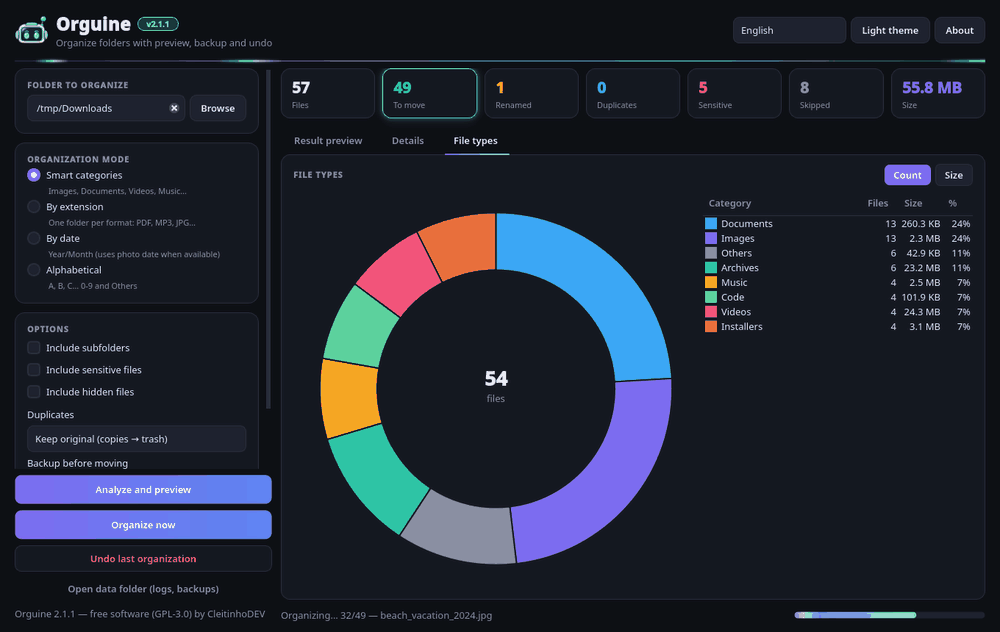
A folder organizer with no nasty surprises
Orguine scans a folder, sorts the files into subfolders (by category, extension, date or first letter) and shows you a "result preview". Nothing is moved until you confirm. It never overwrites anything, leaves important files alone and keeps a journal so you can undo it all later.
Preview first
A tree of the folders that will be created, a details table and a file-type chart. It refreshes by itself whenever you change an option.
4 modes
Smart categories, by extension, by date (Year/Month, using EXIF for photos) and alphabetical.
Real duplicate detection
Compares the content (SHA-256), not just the name. Copies can be sent to the system trash.
Safe and reversible
Never overwrites, protects sensitive files, makes an optional backup and undoes everything in one click.
Download and run: no installation needed
Each release is a single file: no need to install Python or anything else. The buttons below always download the latest version (currently v—).
Windows 10/11 (64-bit)
- Download the .exe file and double-click it.
- If you see "Windows protected your PC" (SmartScreen), click More info → Run anyway.
- That's it! You can create a shortcut to it wherever you like.
Linux (x86_64)
- Download the file (it has no extension).
- Make it executable:
chmod +x Orguine-linux-x86_64 - Run it with
./Orguine-linux-x86_64, or double-click it in your file manager.
macOS (Apple Silicon)
- Download and unzip the .zip: you get the Orguine app.
- The first time, right-click the app → Open → Open. That's Gatekeeper warning you that the app isn't signed.
- Still won't open? Go to System Settings → Privacy & Security → Open Anyway.
.sha256 checksum on the release page so you can verify it.pip install -e ".[exif]" and then python -m orguine.Step by step, from start to finish
It's always the same routine: pick a folder → adjust → check the preview → organize. And if you change your mind, undo.
Pick a folder
Click Browse or drag a folder onto the window. Your Downloads folder is a great place to start.
System folders (like C:\Windows or /usr) are blocked. If you pick your entire home folder, Orguine asks you to type ORGANIZE before it touches anything.
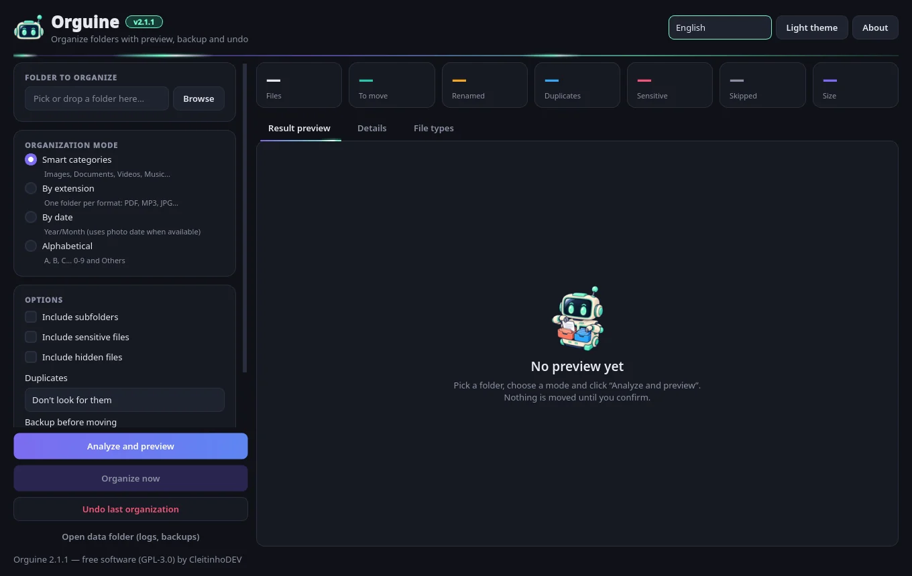
Choose the organization mode
- Smart categories: Images, Documents, Videos, Music, Archives, Installers, Code and Others.
- By extension: one folder per format (PDF, MP3, JPG…).
- By date: Year/Month. For photos it uses the EXIF date when available.
- Alphabetical: A–Z, 0-9 and Others.
See examples of each one in the Modes section.
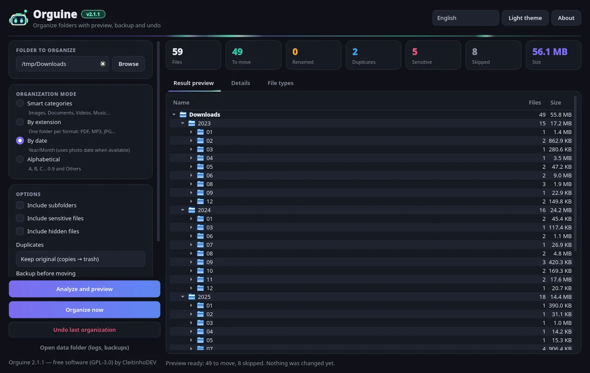
Adjust the options
- Include subfolders: also organizes what's inside subfolders. Project folders are never split up.
- Include sensitive files: off by default (keys, passwords,
.env…). - Include hidden files: also off by default.
- Duplicates: don't look for them, detect and leave in place, keep newest, or keep original (copies go to the trash).
- Backup before moving: no backup, ZIP archive or folder copy.
- Neon animations: turns the visual effects on or off.
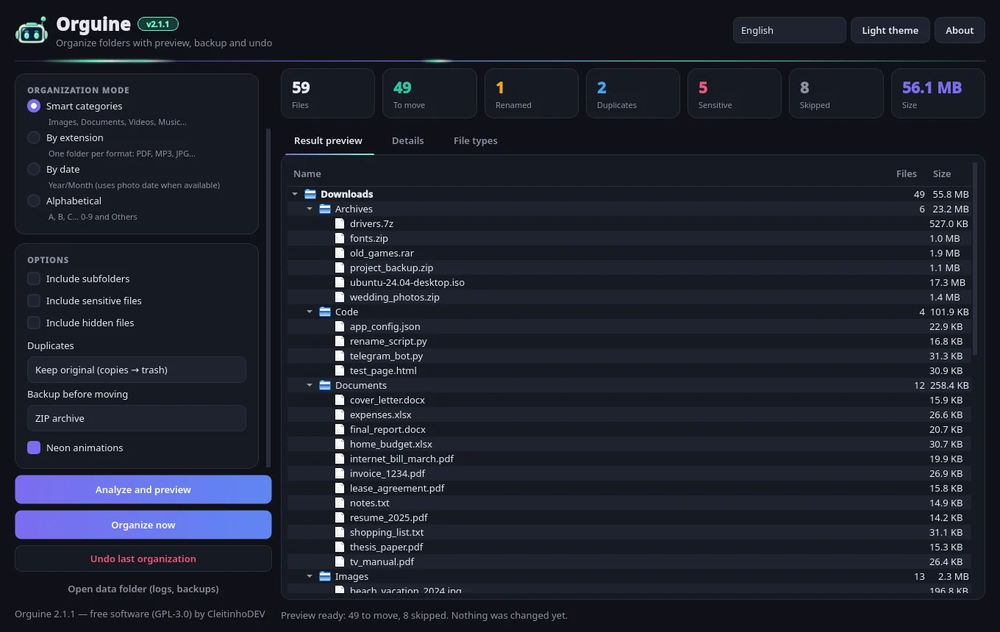
Check the result preview
Click Analyze and preview. The cards at the top show how many files will be moved and renamed, and how many are duplicates, sensitive or skipped. There are three tabs:
- Result preview: the tree of new folders, what goes to the trash and what will stay in place.
- Details: a searchable, filterable table with the reason behind every decision.
- File types: a donut chart by count or by size.
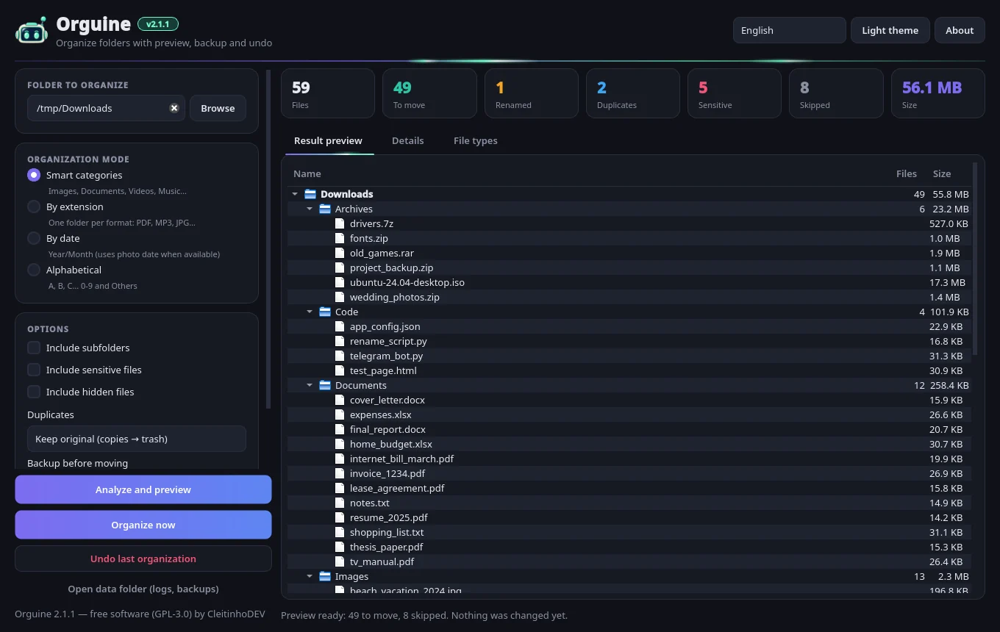
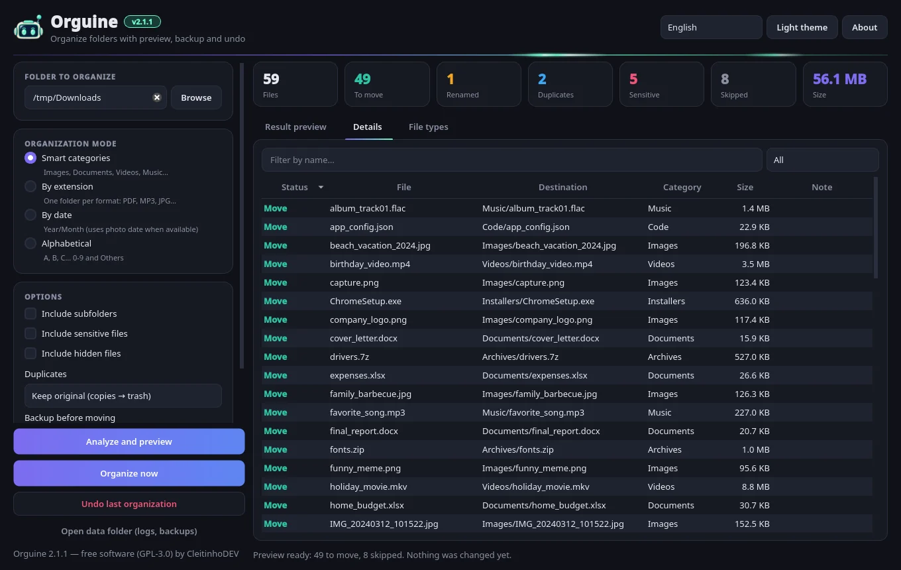
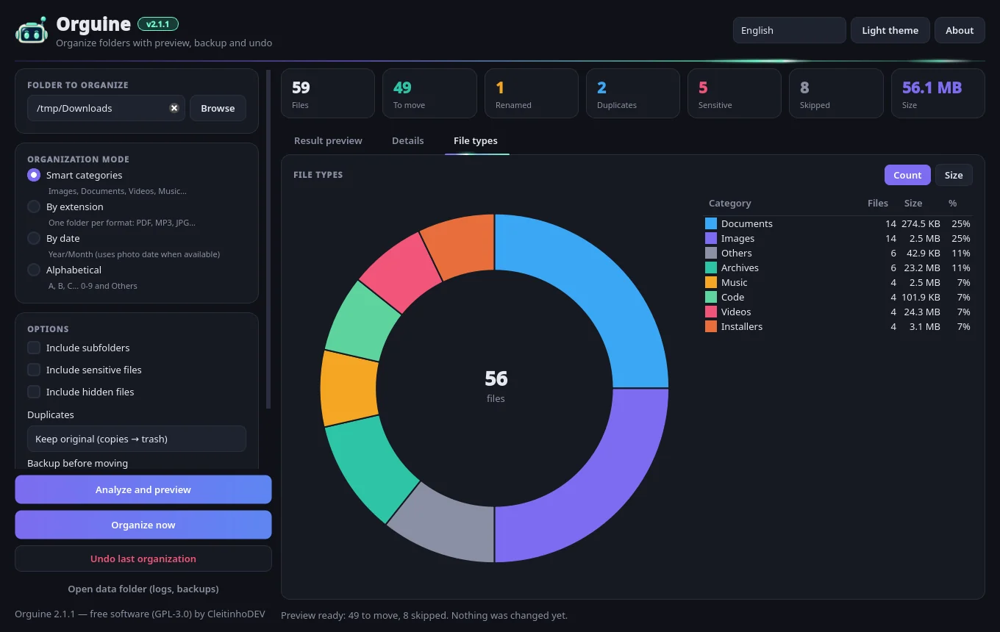
Organize
Click Organize now. Before it starts, Orguine shows a summary: how many files will be moved and into how many folders, how many will be renamed so nothing gets overwritten, how many duplicates will go to the trash and which backup will be made.
If sensitive files are included, a warning lists each one. Answer "No" and they stay where they are. Organizing runs in the background, with a progress bar and a Cancel button.
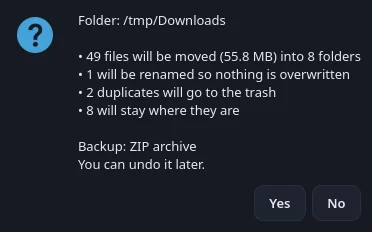
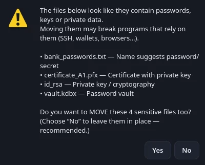
Check the result
At the end, a summary shows how many files were moved, renamed, sent to the trash, skipped or had errors. Everything is recorded in a log, which you can find with the Open data folder button.
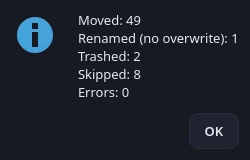
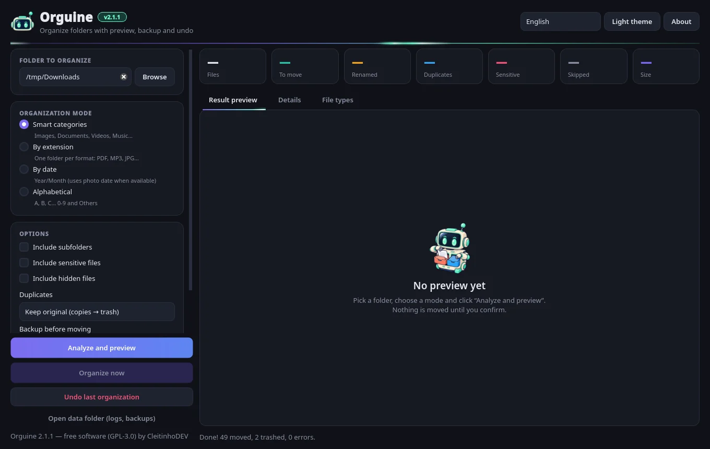
Changed your mind? Undo
Click Undo last organization. Files go back to their original place and name, and the folders that were created are removed if they end up empty.
If another file already has the original name, the returning file gets (1) added to its name, so nothing is overwritten. Duplicates that went to the trash must be restored from the system trash; Orguine tells you how many there are.
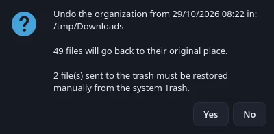
Four ways to tidy things up
Switch modes as often as you like: the preview is recalculated instantly, and nothing is moved until you confirm.
Smart categories (default)
Groups files by type of content: Images, Documents, Videos, Music, Archives, Installers and Code. Anything that doesn't fit goes to Others. You can customize names, colors and extensions with a rules.json file (see the FAQ).
By extension
One folder per format, named after the extension in uppercase. Files without an extension go to No extension. On the command line, this mode is called extensao (or tipo/type).
By date (Year/Month)
Uses the file's modification date. For photos, it uses the date the picture was taken (EXIF) when available, which is perfect for phone photos. On the command line, --sem-exif uses the modification date only.
Alphabetical
By the first letter of the name, from A to Z. Accents are ignored, so Éclair.txt goes to E. Names starting with a number go to 0-9, and everything else to Others.
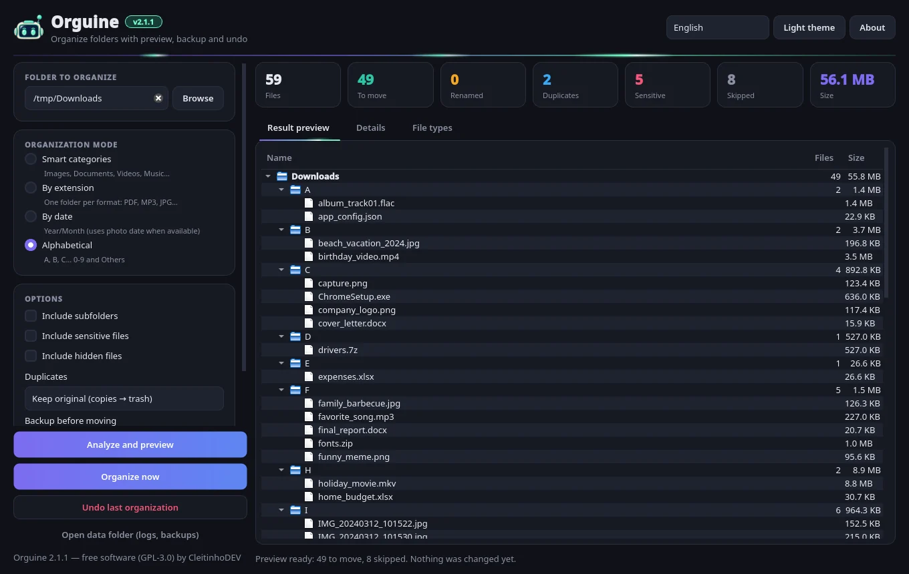
Built to never cost you a file
Organizing shouldn't be risky. That's why Orguine combines several safeguards:
Preview first
Nothing is moved before you see the result and confirm.
Never overwrites
If a file with the same name already exists at the destination, the new one becomes name (1).ext, name (2).ext… Upper and lower case count as the same name, just like on Windows and macOS.
Dangerous folders blocked
Drive roots, C:\Windows, Program Files, /usr, /etc, AppData, ~/.ssh, ~/.config… For your entire home folder, you have to type ORGANIZE.
Sensitive files stay put
Keys (id_rsa, .pem, .pfx), .env files, password vaults (.kdbx), crypto wallets, browser data and names like "password" or "senha" are not moved by default. And they only go to the trash after an extra-strong warning.
System and hidden files skipped
desktop.ini, Thumbs.db, .DS_Store, incomplete downloads (.crdownload, .part), temporary files, symbolic links and the Orguine executable itself. Hidden files are only included if you tick the option.
Trash, never delete
Duplicates go to the system trash (via Send2Trash). Orguine never permanently deletes anything.
Optional backup
A ZIP archive (with an integrity check) or a folder copy, made before anything moves. If the backup fails, nothing is moved.
Undo journal
Every step is written to a journal before it happens. Even if the app closes halfway through, undo still puts everything back with the original names and locations.
Double-check and log
If a file changed between the preview and the organization, it isn't moved and is reported as an error. Everything goes into a log with automatic rotation.
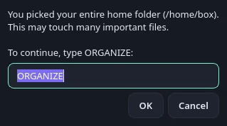
Finds copies by their content
Two files with different names can be identical (resume_2025.pdf and resume_2025 (copy).pdf). Orguine compares the content in stages, so it stays fast even with lots of files:
| Option in the app | What happens | CLI |
|---|---|---|
| Don't look for them | Duplicates aren't checked (default). | none |
| Detect and leave in place | Organizes the oldest one; the copies stay where they are. | skip |
| Keep newest (others → trash) | Organizes the newest one; the others go to the trash. | newest |
| Keep original (copies → trash) | Organizes the oldest one; the copies go to the trash. | trash |
Folder names and project folders
Existing folders are reused
If there's already an Images folder (or images, in different case), Orguine puts the files inside it instead of creating an "Images (2)".
The (2) suffix only appears when the name is taken by a file that is staying where it is, such as a sensitive file called "PIN". If that file is being organized too, the folder keeps its normal name. For example, a file named A goes to A/A.
Projects are never taken apart
With Include subfolders on, Orguine skips folders that look like software projects, meaning those containing .git, .hg, .svn, package.json, Cargo.toml, node_modules or pyvenv.cfg. Folders like __pycache__, .venv and the Windows Recycle Bin are skipped too.
If the folder you picked looks like a project itself, the confirmation shows a warning and the default answer becomes "No".
Light, dark and neon
The robot's #6ff8c8 green pairs with the purple theme. Light streaks run across the header, the active tab and the progress bar. The animations are lightweight, pause while the window is minimized and can be turned off under Options → Neon animations. The interface is available in Portuguese (Brazil) and English: pick yours in the language box at the top right.
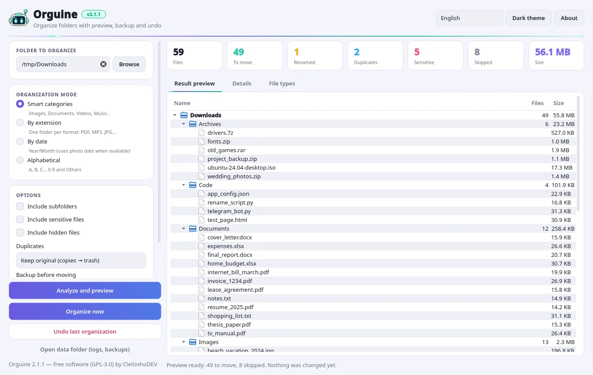
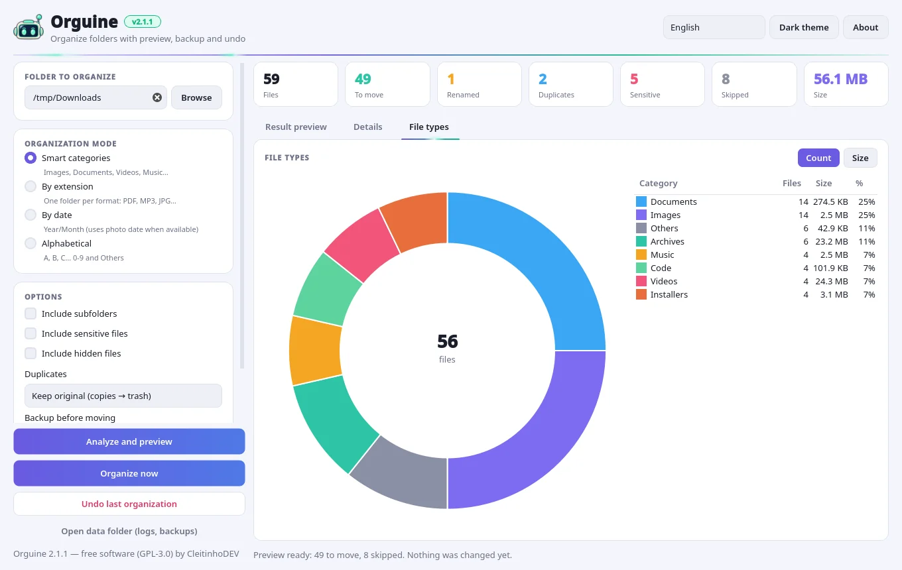
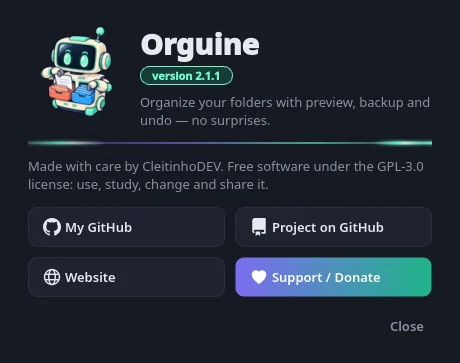
Command line
When running from source, use python -m orguine followed by a folder (with no arguments, it opens the window). After pip install, the orguine-cli command does the same. The options keep their Portuguese names. Add --lang en for English folder names and messages.
# preview only (doesn't touch anything) $ python -m orguine ~/Downloads --dry-run --lang en # by category, with a ZIP backup and copies sent to the trash $ python -m orguine ~/Downloads --backup zip --duplicados trash --lang en # by date, including subfolders, without asking $ python -m orguine ~/Pictures --modo data --recursivo --sim --lang en # undo the last organization $ python -m orguine --desfazer --lang en
| Option | What it does |
|---|---|
--dry-run, -n | Only shows the preview, moves nothing. |
--modo, -m | categoria (default), extensao (or tipo/type), data, abc. |
--recursivo, -r | Includes subfolders. |
--duplicados | none (default), skip, newest, trash. |
--backup | none (default), zip, folder. |
--sim, -y | Doesn't ask before moving. Careful: it also skips the "ORGANIZE" confirmation for the home folder. |
--desfazer | Undoes the last organization. |
--incluir-sensiveis, --incluir-ocultos | Also moves sensitive or hidden files. |
--permitir-lixeira-sensiveis | Allows sensitive duplicates to be sent to the trash. |
--sem-exif | In date mode, uses the modification date only. |
--regras file.json | Uses a custom categories file. |
--lang | pt_BR (default) or en. |
Questions and answers
Is Orguine free? Does it need the internet?
It's free and open source (GPL-3.0 license). It organizes everything on your computer, without an internet connection: your files are never sent anywhere.
Windows said it "protected your PC". Is it a virus?
No. That's SmartScreen warning you that the executable is new and doesn't have a paid digital signature. Click More info → Run anyway. If you like, check the .sha256 on the release page or read the source code.
Can it delete or overwrite my files?
No. It only moves files and never overwrites: if the name already exists at the destination, it adds (1), (2)… Duplicates, if you choose so, go to the system trash and are never permanently deleted.
How do I undo an organization?
Click Undo last organization (or use --desfazer on the command line). Files go back to their original place and name. Duplicates sent to the trash must be restored from the system trash, and Orguine tells you how many there are.
Why do some files "stay in place"?
They're protected or skipped files: sensitive ones (keys, passwords, .env…), hidden files, system files (desktop.ini, Thumbs.db), incomplete downloads, symbolic links or duplicate copies you chose to leave in place. The Details tab shows the reason for each one.
Why did my folder become "Documents (2)"?
Because there's already a file (not a folder) called "Documents" that's staying where it is, for example because it's sensitive or skipped. If it were a folder, it would be reused. And if that file were being organized too, the folder would keep its normal name.
Can I change the categories and extensions?
Yes. Copy default_rules.json from the repository (it's in orguine/resources/) to a rules.json file in the app's data folder and edit the names, colors and extensions. Each category has a name per language (pt_BR and en). On the command line you can also use --regras file.json.
Where are the backups, logs and undo journal stored?
In the app's data folder, which the Open data folder button opens: %APPDATA%\Orguine on Windows, ~/Library/Application Support/Orguine on macOS and ~/.local/share/orguine on Linux. To change the location, set the ORGUINE_DATA_DIR environment variable.
How do I switch the app to English?
Use the language box at the top right of the window. Then build the preview again so the folder names (Images, Documents, Others…) are updated too.
Do the animations slow my computer down?
No. They use a single lightweight timer and pause while the window is minimized. You can turn them off under Options → Neon animations or with the ORGUINE_NO_ANIM=1 environment variable.
I have an Intel Mac. Does it work?
The ready-made build is for Apple Silicon Macs (M1 or newer). On Intel Macs, run it from source with Python 3.10+ (see the Download section).
Found a problem or have an idea. Where do I go?
Open an issue on GitHub. All help is welcome!

Ready to tidy up your Downloads?
Download Orguine v—, pick a folder and check the preview. Don't like it? Just undo.